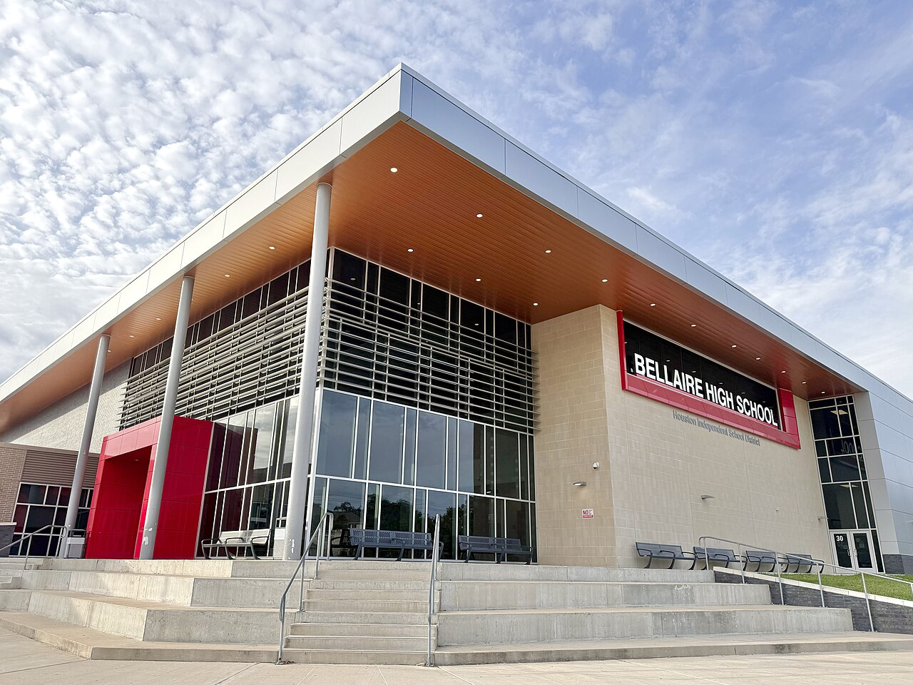

Education
Learning is a top priority. Here is a snapshot of my academic journey and goals.
Current School
I am an upcoming sophomore at Bellaire High School, where I am focused on building strong technical and academic skills.

Academic Performance
My current GPA is 4.25. I’m working hard to keep growing and to reach my target of 4.6 or higher so I can apply to top programs like UT Austin for Computer Science or Engineering, or Texas A&M for Engineering.
Study Focus
- STEM classes and engineering projects
- Problem solving through robotics and programming
- Balance between academics, clubs, and extracurriculars